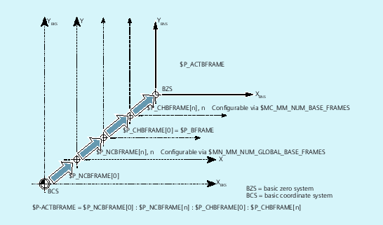
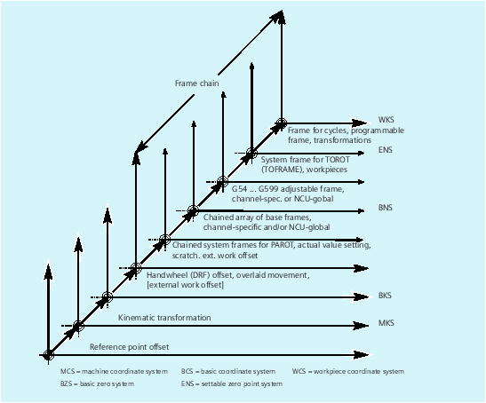

Frames active in the channel are entered from the part program via the relevant system variables of these frames. This also includes system frames. The current system frame can be read and written in the part program via these system variables.
Overview
Current system frames | For: |
$P_PARTFRAME | TCARR and PAROT |
$P_SETFRAME | Preset actual value memory and scratching |
$P_EXTFRAME | External work offset |
$P_NCBFRAME[n] | Current global basic frames |
$P_CHBFRAME[n] | Current channel basic frames |
$P_BFRAME | Current 1. Basic frame in the channel |
$P_ACTBFRAME | Complete basic frame |
$P_CHBFRMASK and $P_NCBFRMASK | Complete basic frame |
$P_IFRAME | Current settable frame |
Current system frames | For: |
$P_TOOLFRAME | TOROT and TOFRAME |
$P_WPFRAME | Workpiece reference points |
$P_TRAFRAME | Transformations |
$P_PFRAME | Current programmable frame |
Current system frame | For: |
$P_CYCFRAME | Cycles |
P_ACTFRAME | Current total frame |
FRAME chaining | Current frame is made up of the complete basic frame |
System variable $P_NCBFRAME[n] can be used to read and write the current global basic frame field elements. The resulting total basic frame is calculated by means of the write process in the channel.
The modified frame is activated only in the channel in which the frame was programmed. If the frame is to be modified for all channels of a control, $P_NCBFR[n] and $P_NCBFRAME[n] must be written simultaneously. The other channels must then activate the frame, e.g. with G54. Whenever a basic frame is written, the complete basic frame is calculated again.
System variable $P_CHBFRAME[n] can be used to read and write the current channel basic frame field elements. The resulting complete basic frame is calculated by means of the write process in the channel. Whenever a basic frame is written, the complete basic frame is calculated again.
The predefined frame variable $P_BFRAME can be used to read and write the current basic frame with the array index 0, which is valid in the channel, in the part program. The written basic frame is immediately included in the calculation.
$P_BFRAME is identical to $P_CHBFRAME[0]. The system variable always has a valid default value. If there is no channel-specific basic frame, an alarm is issued at read/write: "Frame: statement not permissible".
The $P_ACTFRAME variable determines the chained complete basic frame. The variable is read-only.
$P_ACTFRAME corresponds to:
$P_NCBFRAME[0] : ... : $P_NCBFRAME[n] : $P_CHBFRAME[0] : ... : $P_CHBFRAME[n].
The user can select which basic frames are to be included in the calculation of the "Complete" basic frame via the system variables $P_CHBFRMASK and $P_NCBFRMASK. The variables can only be programmed in the program and read via the OPI. The value of the variable is interpreted as a bit mask and specifies which basic frame field element of $P_ACTFRAME is to be included in the calculation.
$P_CHBFRMASK can be used to specify which channel-specific basic frames and $P_NCBFRMASK can be used to specify which global basic frames are to be included in the calculation.
The complete basic frame and the complete frame are recalculated with the programming of the variables. After a reset and in the basic setting, the values of $P_CHBFRMASK and $P_NCBFRMASK are as follows:
$P_CHBFRMASK = $MC_CHBFRAME_RESET_MASK
$P_NCBFRMASK = $MC_CHBFRAME_RESET_MASK
Example:
$P_NCBFRMASK = 'H81' ;$P_NCBFRAME[0] : $P_NCBFRAME[7]
$P_CHBFRMASK = 'H11' ;$P_CHBFRAME[0] : $P_CHBFRAME[4]
The predefined frame variable $P_IFRAME can be used to read and write the current settable frame, which is valid in the channel, in the part program. The written settable frame is immediately included in the calculation.
In the case of global settable frames, the modified frame acts only in the channel in which the frame was programmed. If the frame is to be modified for all channels of a control, $P_UIFR[n] and $P_IFRAME must be written simultaneously. The other channels must then activate the corresponding frame, e.g. with G54.
$P_PFRAME is the programmable frame that results from the programming of TRANS/ATRANS, G58/G59, ROT/AROT, SCALE/ASCALE, MIRROR/AMIRROR or from the assignment of CTRANS, CROT, CMIRROR, CSCALE to the programmable frame.
Current, programmable frame variable that establishes the reference between the settable zero system (SZS) and the workpiece coordinate system (WCS).
The resulting current complete frame $P_ACTFRAME is now a chain of all basic frames, the current settable frame and the programmable frame. The current frame is always updated whenever a frame component is changed.
$P_ACTFRAME corresponds to:
$P_PARTFRAME : $P_SETFRAME : $P_EXTFRAME : $P_ACTBFRAME : $P_IFRAME :
$P_TOOLFRAME : $P_WPFRAME : $P_TRAFRAME : $P_PFRAME : $P_CYCFRAME
The current frame is composed of the complete basic frame, the settable frame, the system frame and the programmable frame in accordance with the current complete frame specified above.
See also:
Global frames ($P_NCBFR, $P_UIFR)
Channel-specific frames ($P_CHBFR, $P_UBFR)